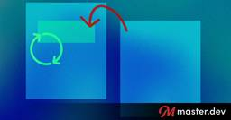

Master.dev Blog RSS Feed
https://blog.master.dev
Helping Your Journey to Senior Developer
フィード

Building a Fancy Scrollspy Using Modern CSS
Master.dev Blog RSS Feed
Scrollspy navigation used to mean IntersectionObserver and a pile of JavaScript. With scroll-target-group, :target-current, and a little anchor positioning, a plain list of anchor links can highlight the current section all on its own.
3時間前

“WebMCP is Agentic WebPerf”
Master.dev Blog RSS Feed
Yoav Weiss makes a good point: “WebMCP is Agentic WebPerf”. I’ve seen both pushback to WebMCP in the form of “websites should just be better, or agents should be smarter, there shouldn’t be alternative paths to using them built.” And I’ve seen plenty of excitement for WebMCP in the form of “ooooo AI droolface”. But […]
3時間前

Tips and Tricks for Using TanStack Start with Cloudflare Durable Objects
Master.dev Blog RSS Feed
Some hot tips on using middleware for simplifying Durable Object creation and managing WebSocket connections.
2日前

5 Good Choices for HTML Containers 1
1
Master.dev Blog RSS Feed
Divs and spans are fine, but purposefully meaningless. Often the meaning actually matters, so let's look at some of those situations.
5日前

How an accessibility designer adds keyboard shortcuts to a web app
Master.dev Blog RSS Feed
Eric Bailey explains the thinking and research that go into adding just a few custom keyboard shortcuts to a web app. There’s an absolute ton to consider and test, and plenty of challenges can come from your own team.
6日前

Testing an iframe’s postMessage Handler
Master.dev Blog RSS Feed
There are some real complexities using iframes and the postMessage API for communication between a widget and its parent. Security vulnerabilities like cross-origin scripting risks being one.
7日前
Interop 2027
Master.dev Blog RSS Feed
I should have noted this sooner (sorry!), but it’s that time of year when Interop is planning for next year. Submissions are closed, and now they spend time refining and culling the proposals. We’ll hear on February 4th, 2027 what the focus will be on. I believe there is still time to “vote” (meaning basically […]
8日前

Transferring sibling-count() to a Parent Element
Master.dev Blog RSS Feed
You can tell a parent element how many children it has with... scroll-driven animations??
9日前
Fallbacks for CSS `progress()`
Master.dev Blog RSS Feed
The new CSS progress() function calculates a value between 0 and 1, representing its position within a defined range. While awaiting broader browser support, users can manually implement this using other methods.
12日前
Front-End Checklist
Master.dev Blog RSS Feed
David Dias has been working on “Front-End Checklist” stuff for a decade, and it looks like this latest version of it a little over a year. There is loads of good general advice in it that can be easy to forget: Now it’s all AI’d up, which makes sense, having a skill and MCP so […]
13日前